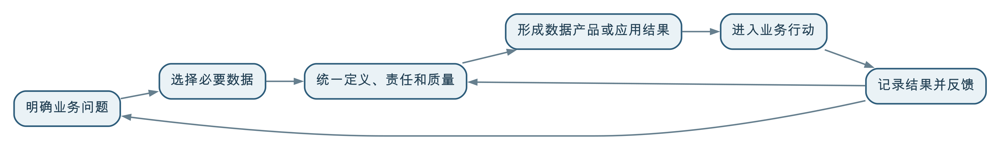

数据治理和应用场景不是简单的先后关系。业务场景应先确定方向和价值目标，场景所需的数据治理必须同步开展；当试点验证有效以后，再把其中稳定的标准、模型、质量规则和平台能力抽取出来，支撑更多场景复用。
不能等到“所有数据都治理好了”才开始应用，因为治理范围和质量要求需要由业务用途决定；也不能先做一个临时应用，把口径、质量、责任和更新问题留到以后，因为这样的应用通常无法稳定运行。
更合适的方式是：以场景牵引治理，以治理保证场景，以场景反馈持续改进治理。
数据治理项目中常见两种意见。
一种认为应该先完成数据标准、数据质量、主数据、数据仓库和治理平台建设，数据准备充分以后再开展应用。另一种认为应该先快速开发报表、模型或大屏，等业务看到效果以后再补治理。
这两种意见各自看到了问题的一面：
真正的问题不是在二者之间选择一个绝对起点，而是确定不同阶段各自应先做什么、做到什么程度，以及如何形成反馈循环。
一个组织可能拥有成千上万张表、文件、接口和指标。如果没有明确场景，很难判断哪些数据重要、哪些质量问题必须解决、哪些数据需要每日更新。
同一份数据用于年度统计可能已经足够，用于实时预警却可能不及时；用于趋势分析可以容忍少量缺失，用于付款或审批则可能一条都不能错。
脱离用途制定统一的“高质量”目标，容易花费大量资源修复并不影响业务的数据问题。
很多对象和指标在会议中看似已经达成一致，真正计算和使用时才会暴露颗粒度、时间状态、异常处理和历史版本问题。一次性设计全部标准，很难预见所有实际差异。
如果先建设一套覆盖所有能力的平台，功能优先级往往来自产品清单或技术设想，而不是业务使用。最终可能接入很多数据，却缺少稳定使用者和业务结果。
因此，治理需要顶层原则和必要基础，却不应以“全量完成”为应用启动条件。
为了快速上线，开发人员可能自行理解指标、对象和时间范围。应用一旦被管理者使用，这些临时规则就会成为事实上的口径，后续再纠正会更加困难。
试点阶段可以人工核对，但如果长期在 Excel、脚本或报表中补数，源系统的责任和质量问题没有解决，下一次更新仍会重复发生。
一次分析可以通过人工导数完成，正式应用却需要稳定的数据源、调度、质量监控、失败处理和责任机制。只验证页面和算法，不验证运行链路，应用上线后很快就会失去鲜活度。
如果每个应用都自行接数、自建产品编码、自算指标和自设权限，短期看起来很快，长期会形成多套口径、多条链路和新的数据孤岛。
所以，“应用先行”不能理解为绕过治理。它应当是用场景明确治理重点，并在有限范围内同步完成必要治理。
更准确的实施顺序可以分成三个层次。
首先明确：
这一步先于具体治理任务，因为它决定数据范围、质量门槛、更新频率和投入优先级。
围绕首期场景，同时完成：
治理不是场景开发前的一道审批，也不是上线后的补充文档，而是应用形成可信结果所需的组成部分。
试点运行以后，识别哪些内容会被其他场景复用，例如：
这些经过真实使用验证的内容，可以沉淀为组织级标准、公共模型和平台能力。随着复用次数增加，公共能力会逐渐前置，新场景的交付速度也会提高。
“最小治理”经常被误解为少做几张表、少写几条规则。真正的最小治理，指的是范围可以小，但价值链必须完整。

一个最小但完整的闭环至少应包含：
范围很大但缺少行动和反馈，不是完整治理；范围很小但能够持续运行并验证价值，反而更适合作为试点。
场景牵引不等于所有基础工作都必须等具体应用提出以后才做。以下能力通常可以适当前置：
身份认证、数据分类分级、敏感数据保护、访问审计等底线要求，应覆盖所有场景，不能等应用上线后再补。
组织、人员、地区、时间等被大量场景共同使用的基础数据，可以提前统一。但仍要有明确的使用范围和责任，不宜无限扩张为全量主数据工程。
连接、调度、元数据、质量、血缘、权限和运行监控等基础能力，可以提前形成最小可用版本，避免每个试点重复建设。
如果核心业务数据长期缺失、重复或无法访问，已经明确阻碍多个场景，可以先整改源头流程和系统。
试点需要遵守统一的概念、数据身份、权限、接口和技术路线，不能为了快速交付留下长期并行路径。
这些前置工作仍应服务可以预见的业务需求。没有使用范围和优先级的“公共基础”，很容易重新变成没有边界的平台工程。
某工业园区希望降低能源成本，并及时发现建筑和设备的异常用能。相关数据包括电表和水表读数、建筑与设备台账、生产班次、天气、能源价格和维修记录。
项目可能从盘点园区所有传感器、统一全部设备编码、治理多年历史数据和建设完整能源平台开始。工作范围很大，但业务人员要等很久才能看到结果，也无法提前判断哪些数据和规则真正有用。
技术团队也可以直接选择几个仪表制作能耗大屏或异常算法。但如果电表与建筑和设备无法准确对应，读数采集周期不同，停产和检修状态没有记录，算法可能把正常变化误判为异常。预警即使生成，也不知道应该由谁处理。
首期可以选择一个车间和几类重点设备，明确目标是识别非生产时段异常用电并减少峰时能耗。
同步开展必要治理：
试点验证以后，可以把设备和仪表关联模型、时序质量规则、异常处理流程和能源指标沉淀为公共能力，再扩展到更多车间、建筑和能源类型。
这个过程不是场景先做完再补治理，也不是治理完成后才开始应用，而是在同一个闭环中同步推进，并通过实际效果决定下一步投入。
试点为了验证价值，可能需要人工映射、临时补录或简单脚本。这些手段并非绝对不能使用，但必须有明确边界：
试点可以验证假设，却不能以“先跑起来”为理由长期保留两套口径和两条数据路径。否则，每扩展一个场景，技术债务和管理争议都会增加。
应用价值需要业务目标、使用者和行动机制。治理成果不会自动找到业务用途。
临时口径、手工数据和不可追溯结果一旦进入管理决策，后续纠正成本通常更高。
试点应控制范围，但仍要识别公共对象、指标和能力，避免每个场景独立建设。
最小指范围和能力边界，不代表关键数据可以不可信。首期数据仍要满足实际业务用途。
顶层设计确定原则和边界，实际对象、规则和流程仍需要在真实场景中检验。
人工操作可以帮助发现规则，但正式运行前必须明确自动化、源头整改和运营责任。
首期价值也可能表现为成本降低、风险提前发现、决策周期缩短和治理能力复用，应采用适合的证据评价。
数据治理和应用场景没有一个适用于所有工作的固定先后顺序。场景应先确定价值方向，治理要与场景同步落地，经过验证的共性能力再逐步沉淀和前置。
不能等待所有数据都治理完，也不能让应用绕过治理快速形成另一套口径。更可靠的方法是从一个范围可控的业务问题开始，建立最小但完整的闭环，让数据结果进入行动，让行动结果反馈治理，再把有效能力复用到更多场景。
数据治理不是应用之前的一次准备工作，应用场景也不是治理之后的一次展示。二者共同构成“让数据为业务增值”的持续过程。
← 上一问：019 数据如何为业务增值？ · 返回目录 · 下一问：021 数据治理中的数据建模和三维建模是一回事吗？ →